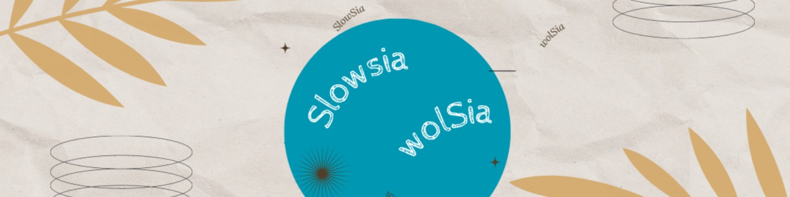

Newsletter Portfolio
18/04/2025
Découvrez mes derniers projets et réalisations dans cette newsletter hebdomadaire.
Récits visuels, horizons numériques :
Chaque newsletter, un voyage entre données, créativité et découvertes
Comment lire Reliquiae Aquitanicae ? Avatar Edouard Lartet : Agent Conversationnel Historique

Méthodologie Narrative de Traitement de Données
Optimisation d'un avatar conversationnel pour l'archéologie préhistorique
Résumé // Lev MANOVTICH, *The Science of Culture ?* in *Cultural Analysis*
Méréologie comme cadre d'analyse
Architecture Modulaire à Base de Contenu
Comment lire Reliquiae Aquitanicae ? Avatar Edouard Lartet : Agent Conversationnel Historique
Présentation du Projet "Avatar Lartet"
 Un agent conversationnel basé sur un personnage historique, démontrant l'application des techniques de traitement du langage naturel (NLP) pour créer une expérience interactive et éducative sur une oeuvre litteraire ancienne.**
Un agent conversationnel basé sur un personnage historique, démontrant l'application des techniques de traitement du langage naturel (NLP) pour créer une expérience interactive et éducative sur une oeuvre litteraire ancienne.**
Quelle est cette publication Reliquiae Aquitanicae ?
Reliquiae Aquitanicae est une oeuvre majeure en archéolgie préhistorique (et en paléontologie), d'une part, elle démontre la préhistoire comme une discipline scientifique rigoureuse et, d'autre part, elle participe à interroger les origines de l'homme, à une époque où celles-ci se fondent d'abord sur un texte religieux comme la Bible.
Cette publication, dirigée par Édouard Lartet et Henry Christy, dans les années 1865-1875, représente donc l'une des premières études scientifiques systématiques des vestiges préhistoriques du Périgord et des régions avoisinantes du sud de la France.
Objectifs
Le but est bien d'interroger notre manière de lire face à des oeuvres anciennes : notre rapport à la lecture a été particulièrement modifié par le numérique, et bien qu'il ne soit jamais simple de les aborder, perdre cette "confrontation" entre cet objet médiatisé que représente ici l'ouvrage scientifique et ceux qui le lisent serait préjudiciable, à mon sens, à notre capacité à transmettre.
Autrement dit, la lecture et son pendant l'esprit critique sont des formes de mise en présence : il s'agit soit d'une proposition, soit d'une nécessité, d'exercer sa pensée. (Vaste débat que la mise en présence du texte...)
Il nous a semblé alors intéressant de créer cette sorte d'affontement (intellectuel et pacifiste!) à travers ces objectifs :
- Créer une expérience de médiation culturelle basée sur une partie du texte de Reliquiae Aquitanicae,
- Utiliser l'IA pour rendre cette histoire accessible à travers un apprentissage personnalisé,
- Permettre des interactions immersives avec un personnage historique, représenté par cet avatar, dans une notion de transmission de connaissances historiques.
Cadre de l'analyse
Au même titre que n'importe quelle analyse, celle-ci se base sur une méthodologie pour répondre à une problématique.
Nous avons fait appel à différents outils conceptuels comme l'ontologie et l'analyse méréologique pour organiser les informations du texte original.
L'objectif principal était une intégration explicite de l'ontologie et de la méréologie dans le processus de génération des réponses proposées par le modèle d'apprentissage.
Pourquoi ? Notre hypothèse de travail était de tester à une petite échelle si ces structures de contrôle pouvaient limiter les hallucinations (incohérences et anachronismes) en encadrant la "créativité" du modèle.
Si cette démarche vous intéresse, je vous renvoie vers mon carnet HYPOTHESES sur la plateforme OpenEdition à l'article suivant : Architecture conceptuelle d’un avatar historique : analyse textuelle intégrant une ontologie et analyse méréologique
Technologies Utilisées
- Traitement du Langage Naturel
- Python
- Streamlit
Lien du Projet
Il s'agit d'un prototype pour tester la création d'une base de connaissances à partir de fichiers d'ontologie et de méréologie, celui-ci sera amené à encore évoluer.
Interagir avec l'Avatar Edouard Lartet
Note: il faut un compte STREAMLIT et le temps de chargement peut être assez long.
Fonctionnalités Principales
- Conversation contextuelle basée sur l'ouvrage d'Edouard Lartet et Henry Christy
- Réponses adaptatives et personnalisées (personnalisation contextuelle)
- Capacité à partager des informations historiques détaillées
Compétences mises en oeuvre
Il y a aussi de notre part l'idée d'une exploration des possibilités de l'IA générative dans ces outils :
- Développement d'agents conversationnels
- Modélisation de personnalités historiques
- Techniques avancées de NLP
- Conception d'expériences interactives éducatives
Référence
Lartet & Christy 1865-1875, Lartet É., Christy H., Reliquiae Aquitanicae: being contributions to the archaeology and palaeontology of Perigord and the adjoining provinces of southern France; edited by Thomas Rupert Jones, London/Paris/Leipzig, Williams & Norgate/J.B. Baillière/A. Brockhaus, 1865-1875, 204 p., 79 pl. h.-t.
Retour en hautMéthodologie Narrative de Traitement de Données
Chaque ensemble de données raconte une histoire. Mon approche consiste à écouter ces récits, à comprendre leurs nuances et leurs implications culturelles sous-jacentes.
Au-delà des chiffres, je recherche les fils conducteurs qui relient les données aux expériences humaines, aux dynamiques organisationnelles et aux évolutions sociétales.
Chaque donnée est située dans son écosystème : professionnel, culturel, historique. Cette approche permet de révéler des insights qui dépassent l'analyse statistique traditionnelle.
Optimisation d'un avatar conversationnel pour l'archéologie préhistorique
Introduction
Cet article résume un processus d'amélioration d'un système d'IA conversationnel nommé "Lartet", conçu pour simuler les interactions avec Édouard Lartet, un paléontologue et préhistorien français du 19ème siècle. Le système utilise une architecture d'apprentissage automatique pour générer des réponses informées à partir de passages de l'ouvrage "Reliquiae Aquitanicae".
Défis identifiés
L'analyse des logs et des réponses générées a permis d'identifier plusieurs défis:
- Répétition de contenus: Le système intégrait le même passage dans différentes sections
- Problèmes de traduction: La traduction automatique anglais-français produisait des textes incohérents
- Hallucinations et substitutions inappropriées: Les noms propres étaient systématiquement remplacés par "mon collègue"
- Absence d'utilisation de l'ontologie et de la méréologie: Malgré des structures de données riches, ces éléments n'étaient pas intégrés
- Réponses non adaptées à certaines questions sensibles: Le système ne traitait pas correctement les questions sur Henry Christy
Solutions développées
1. Amélioration de l'extraction d'informations
La fonction extract_structured_info a été optimisée pour éviter les doublons entre catégories:
```python
Éviter les doublons entre catégories
all_items = set() for category in list(info.keys()): unique_items = [] for item in info[category]: item_hash = hash(item) if item_hash not in all_items: all_items.add(item_hash) unique_items.append(item) info[category] = unique_items ```
2. Gestion des questions sensibles
Une fonction spécifique a été implémentée pour traiter les questions sur Henry Christy:
python
def get_christy_collaboration_response(self):
"""Fournit une réponse prédéfinie sur la collaboration avec Christy"""
if self.language == "fr":
return """
Je préfère ne pas m'étendre sur mes relations personnelles ou professionnelles...
"""
3. Restructuration du générateur de questions suggérées
La fonction get_default_question a été entièrement réécrite pour offrir des suggestions pertinentes sans mentionner Henry Christy:
```python def get_default_question(self, user_input: str) -> str: """Retourne une question par défaut basée sur la requête utilisateur.""" query_lower = user_input.lower()
if self.language == "fr":
default_questions = [
"Pouvez-vous me parler de vos principales découvertes au Périgord?",
# Autres questions...
]
```
4. Amélioration de la cohérence linguistique
Le système a été modifié pour présenter clairement les extraits en anglais tout en maintenant une structure en français:
```python
Note explicative sur la langue
response_parts.append("## Note sur la langue") response_parts.append("Bien que mes publications scientifiques fussent rédigées en anglais, je vous présente ici une synthèse en français de mes travaux.") ```
5. Intégration de l'ontologie et de la méréologie
Des fonctions ont été ajoutées pour exploiter les structures ontologiques et méréologiques:
python
def initialize_knowledge_base(self):
"""Charge et structure l'ontologie et la méréologie"""
self.structured_ontology = {}
self.structured_mereology = {}
# Traitement des données...
Résultats
Les modifications ont permis d'obtenir:
- Des réponses plus cohérentes et sans répétitions
- Une meilleure présentation des extraits originaux
- Une gestion appropriée des questions sensibles
- Une exploitation plus riche des connaissances structurées
Conclusion
Ce processus d'optimisation illustre les défis spécifiques de la création d'avatars historiques utilisant le RAG. Il souligne l'importance d'une adaptation fine des mécanismes de génération et de vérification pour produire des interactions authentiques et informatives.
L'amélioration de ce système démontre comment les techniques d'IA contemporaines peuvent être adaptées pour préserver et transmettre le patrimoine scientifique historique de manière interactive et engageante.
Retour en hautRésumé // Lev MANOVTICH, *The Science of Culture ?* in *Cultural Analysis*
Résumé // Lev MANOVTICH, The Science of Culture ? in Cultural Analysis
L'analyse culturelle s'intéresse aux modèles qui peuvent être dérivés de l'analyse de vastes ensembles de données culturelles. Lien vers l'ouvrage en ligne : Cultural Analysis
#analyse_quantitative #big_data #medias
"L'idée qu'un groupe ou une personne a des comportements et des goûts culturels cohérents avait du sens dans les sociétés anciennes et modernes. Mais avec les nombreux choix culturels disponibles aujourd'hui, nous pourrions découvrir que l'idée d'un goût stable ou d'une « personnalité culturelle » stable est une illusion."
➡️l'illusion du goût ➡️la classification n'est toujours pas l'explication ➡️Nouveau paradigme? D'où l'importance "And here the concepts and methods of sampling, feature extraction, and exploratory data analysis are more important than data size"
Structures cognitives & structures sociales
Nos structures cognitives sont celles de nos structures sociales (La distinction, 1979)
Pour reprendre R.MOURIEUX, "Entre réalisme populaire et l'idéalisme bourgeois se situe le goût moyen des couches moyennes, fait de refus des extrêmes et de mimétisme de l'immédiat supérieur" 1.https://www.persee.fr/doc/sotra_0038-0296_1980_num_22_4_1655_t1_0475_0000_2
Les séries de Claude Monet (1840-1926)
Du 22 septembre 2010 au 24 janvier 2011 - Paris, Galeries nationales du Grand Palais
➡️ Notons aussi le rapport entre expérience sensible & image (une image est une densité de probabilités dans un espace de plus grande dimension) Remarquez que dès le potron-minet, la lumière sur la pierre d'une façade de cathédrale reste une expérience sensible comparable à l'image - les séries de MONET ça ne fait pas de mal non plus ! 🙂
Posté sur Linkedin du 28 mars 2025
Retour en hautMéréologie comme cadre d'analyse
Demande de prompt : définition et applications de la méréologie
Origines et définition
La méréologie, théorie formelle des relations entre les parties et le tout, trouve ses racines dans les travaux du philosophe et logicien polonais Stanisław Leśniewski, qui développa cette approche dans les années 1910-1920. Cependant, l'étude des relations partie-tout était déjà présente dans la pensée d'Aristote et a été explorée plus tard par des philosophes comme Edmund Husserl dans ses "Recherches logiques" (1900-1901) et Alfred North Whitehead.
D'autres contributions significatives incluent les travaux de Peter Simons ("Parts: A Study in Ontology", 1987) et Nelson Goodman ("The Structure of Appearance", 1951), qui ont étendu et formalisé davantage cette théorie logique.
Applications dans l'analyse culturelle
Dans le domaine de l'analyse culturelle, l'approche méréologique offre un cadre conceptuel permettant d'examiner comment les éléments culturels fonctionnent simultanément comme entités autonomes et comme composantes de systèmes plus larges. Cette perspective s'avère particulièrement utile pour comprendre:
- Les relations entre pratiques culturelles individuelles et systèmes globaux
- L'intégration des sous-cultures dans des cultures plus étendues
- La manière dont les artefacts culturels acquièrent des significations différentes selon les contextes
Ce cadre théorique permet d'analyser efficacement les processus d'hybridation culturelle en montrant comment des éléments issus de différents ensembles peuvent être recombinés pour former de nouvelles totalités culturelles.
La méréologie en linguistique cognitive
La linguistique cognitive utilise la méréologie pour étudier comment nous conceptualisons et exprimons les relations partie-tout dans le langage. On peut distinguer plusieurs types de relations méréologiques dans les expressions linguistiques:
- Relations partie-objet physique: "le toit de la maison", "la poignée de la porte"
- Relations membre-collection: "un joueur de l'équipe", "une carte du jeu"
- Relations portion-masse: "une tranche de pain", "une goutte d'eau"
Ces expressions reflètent notre conceptualisation cognitive des ensembles et peuvent varier considérablement d'une langue à l'autre, certaines utilisant des classificateurs spécifiques ou des constructions grammaticales distinctes.
Applications en ontologie informatique
Dans le domaine de l'informatique, la méréologie est fondamentale pour la construction d'ontologies comme SNOMED CT (Systematized Nomenclature of Medicine -- Clinical Terms), l'une des plus importantes ontologies médicales. Les relations méréologiques y sont utilisées pour:
- Structurer hiérarchiquement les concepts médicaux
- Faciliter le raisonnement automatique
- Permettre des requêtes complexes dans les dossiers médicaux électroniques
Par exemple, l'ontologie établit des relations comme "le ventricule gauche est une partie du cœur" ou "la fièvre est une partie du syndrome grippal", fournissant ainsi une base pour l'inférence automatisée.
Analyse méréologique des archives visuelles
L'application de la méréologie à l'analyse des archives visuelles constitue un domaine particulièrement innovant. Cette approche permet d'étudier:
-
La relation entre l'image individuelle et la collection: Une image isolée possède sa propre signification, mais acquiert des dimensions supplémentaires lorsqu'elle est mise en relation avec d'autres images.
-
Les sous-ensembles significatifs: Comment certains groupements d'images constituent des "parties" cohérentes qui transmettent un message spécifique au sein de l'ensemble plus large.
-
Les éléments visuels récurrents: La façon dont certains motifs deviennent des unités méréologiques structurant la collection.
Le raisonnement métavisuel
Le raisonnement métavisuel, qui consiste à analyser les relations entre les images au-delà de leur contenu individuel, s'appuie sur plusieurs opérations:
- Catégorisation: Identifier les principes d'organisation des images
- Contextualisation: Replacer chaque image dans son rapport aux autres
- Abstraction: Dégager des motifs invisibles au niveau de l'image individuelle
Opérations rhétoriques dans l'analyse scientifique des archives visuelles
Pour produire des informations scientifiques à partir d'une collection d'images, plusieurs opérations rhétoriques sont employées:
- Juxtaposition: Révéler des similarités ou différences par la mise en parallèle
- Série et séquence: Organiser les images pour dégager des tendances ou ruptures
- Synecdoque visuelle: Utiliser certaines images comme représentatives d'ensembles plus larges
- Métaphore structurelle: Employer des structures conceptuelles pour représenter les relations entre images
- Échantillonnage représentatif: Sélectionner des sous-ensembles reflétant les propriétés de la collection entière
Ces opérations transforment une accumulation d'images en un corpus structuré produisant des connaissances scientifiques sur les phénomènes visuels, les pratiques culturelles ou les évolutions historiques qu'elles documentent.
Conclusion
La méréologie, née dans le domaine de la logique formelle, s'est révélée être un cadre conceptuel exceptionnellement fertile pour diverses disciplines. Son application à l'analyse culturelle, à la linguistique cognitive, à l'ontologie informatique et particulièrement à l'étude des archives visuelles démontre sa puissance pour comprendre les relations complexes entre les parties et les ensembles dans de multiples domaines de la connaissance.
En offrant une méthodologie pour analyser comment les significations émergent non seulement des éléments individuels mais aussi de leurs interactions, la méréologie constitue un outil précieux pour la recherche contemporaine dans les sciences humaines et sociales, ainsi que dans le domaine des technologies de l'information.
contenu généré par une IA générative
Retour en hautArchitecture Modulaire à Base de Contenu
Architecture Modulaire à Base de Contenu
L'Architecture Modulaire à Base de Contenu (ou "Content-Driven Modular Architecture") représente une approche moderne et flexible pour concevoir des sites web et des applications. Cette méthodologie place le contenu au centre du processus de développement, en le séparant strictement de la présentation.
Mots-clés: développement, architecture, contentdriven, méthodologie, applications
Principes fondamentaux
Cette architecture repose sur plusieurs principes clés qui la rendent particulièrement efficace pour les sites riches en contenu comme les portfolios et les blogs :
Mots-clés: architecture, portfolios, principes, plusieurs
Le contenu est stocké dans des fichiers indépendants (souvent au format Markdown) avec des métadonnées standardisées (frontmatter), complètement séparés du code HTML, CSS et JavaScript qui définit leur présentation. Cette séparation permet à chaque aspect d'évoluer indépendamment.
Mots-clés: standardisées, indépendance, présentation
Les sections et composants peuvent être facilement réutilisés, réorganisés ou recombinés pour créer de nouvelles pages ou expériences. Cette flexibilité permet d'assembler rapidement différentes vues à partir des mêmes éléments de base.
Mots-clés: expériences, réorganisation, flexibilité
Modifier un contenu n'exige pas de toucher au code HTML principal. Les rédacteurs de contenu peuvent se concentrer uniquement sur les fichiers Markdown pertinents, sans risquer d'altérer la structure ou le fonctionnement du site.
Mots-clés: fonctionnement, pertinents, concentrer, uniquement, rédacteurs
Ajouter une nouvelle section est aussi simple que de créer un nouveau fichier Markdown. Cette approche réduit considérablement la friction pour enrichir le site avec de nouveaux contenus.
Mots-clés: contenus
Implémentation pratique
Pour les composants simples, le Markdown pur suffit généralement. Cependant, pour les composants plus complexes comme les grilles de compétences, les cartes de services, ou les processus multi-étapes, l'HTML embarqué dans Markdown offre le meilleur compromis :
Cette approche hybride permet de préserver le rendu visuel des composants complexes tout en profitant pleinement de la modularité du système.
Mots-clés: multiétapes, compétences, composants, markdown, modularité, composants, complexes
Avantages à long terme
Au-delà des bénéfices immédiats, cette architecture offre des avantages substantiels sur le long terme :
- Transitions technologiques facilitées - Le contenu peut être conservé même si le framework ou la technologie de présentation change
- Versionning efficace - Les modifications de contenu sont clairement visibles dans les commits Git
- Possibilités de migration accrues - Le contenu peut être facilement exporté vers d'autres systèmes
- Optimisation du workflow - Les designers et développeurs peuvent travailler sur l'interface pendant que les rédacteurs créent le contenu
Cette architecture représente une évolution naturelle des systèmes de gestion de contenu traditionnels, offrant davantage de flexibilité tout en conservant une structure claire et organisée.
Mots-clés: architecture, flexibilité
1. Séparation du contenu et de la présentation
Le contenu est stocké dans des fichiers indépendants (souvent au format Markdown) avec des métadonnées standardisées (frontmatter), complètement séparés du code HTML, CSS et JavaScript qui définit leur présentation. Cette séparation permet à chaque aspect d'évoluer indépendamment.
Mots-clés: indépendance, standardisés, présentation
2. Composabilité
Les sections et composants peuvent être facilement réutilisés, réorganisés ou recombinés pour créer de nouvelles pages ou expériences. Cette flexibilité permet d'assembler rapidement différentes vues à partir des mêmes éléments de base.
Mots-clés: flexibilité
3. Maintenabilité
Modifier un contenu n'exige pas de toucher au code HTML principal. Les rédacteurs de contenu peuvent se concentrer uniquement sur les fichiers Markdown pertinents, sans risquer d'altérer la structure ou le fonctionnement du site.
Mots-clés: pertinents, rédacteurs
4. Évolutivité
Ajouter une nouvelle section est aussi simple que de créer un nouveau fichier Markdown. Cette approche réduit considérablement la friction pour enrichir le site avec de nouveaux contenus.
Mots-clés: enrichir, contenus
Retour en haut